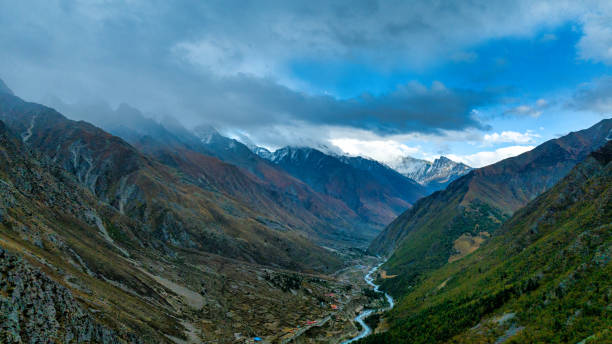
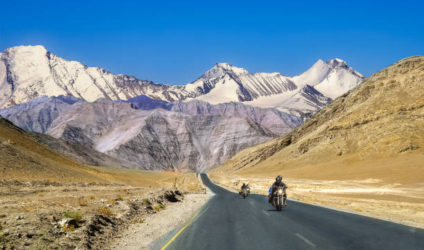
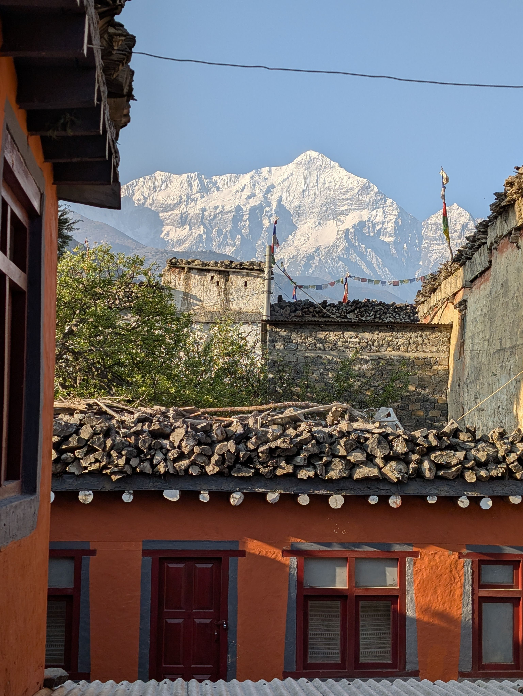

HIMACHAL PRADESHLive Like a Local in Tirthan Valley
Slow down, stay with local families, walk through mountain villages and discover the peaceful rhythm of life in Tirthan.
EXPLORE EXPERIENCE →LIVE LOCAL HIMALAYA
Travel deeper. Meet locals. Experience the Himalayas.
DISCOVER THE HIMALAYAS
Go beyond the usual tourist trails and discover the Himalayas through its people, traditions, food, villages and landscapes. Choose an experience and discover the story behind the place.
LOCAL STORIES
Every place has a story. Meet the people, discover traditions and experience the Himalayas from a local perspective.

HIMACHAL PRADESHSlow down, stay with local families, walk through mountain villages and discover the peaceful rhythm of life in Tirthan.
EXPLORE EXPERIENCE →
HIMACHAL PRADESHExplore remote villages, ancient monasteries and dramatic landscapes while discovering the unique culture of Spiti.
EXPLORE EXPERIENCE → HIMACHAL PRADESH
HIMACHAL PRADESH
Meet local families, taste traditional Himalayan food and discover the stories and traditions of Kinnauri communities.
EXPLORE EXPERIENCE →
UTTARAKHANDWalk through quiet mountain villages, meet local people and experience the simple everyday life of the Himalayas.
EXPLORE EXPERIENCE →YOUR HIMALAYAN STORY
Discover experiences that bring you closer to the people and places of the Himalayas.
PLAN YOUR EXPERIENCE